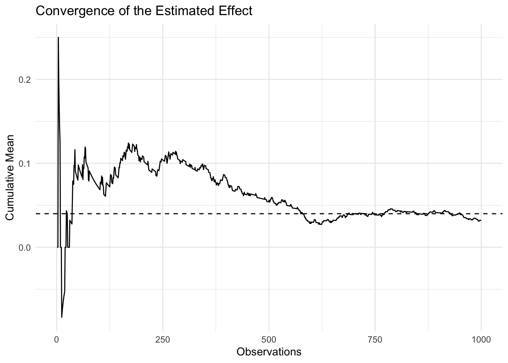
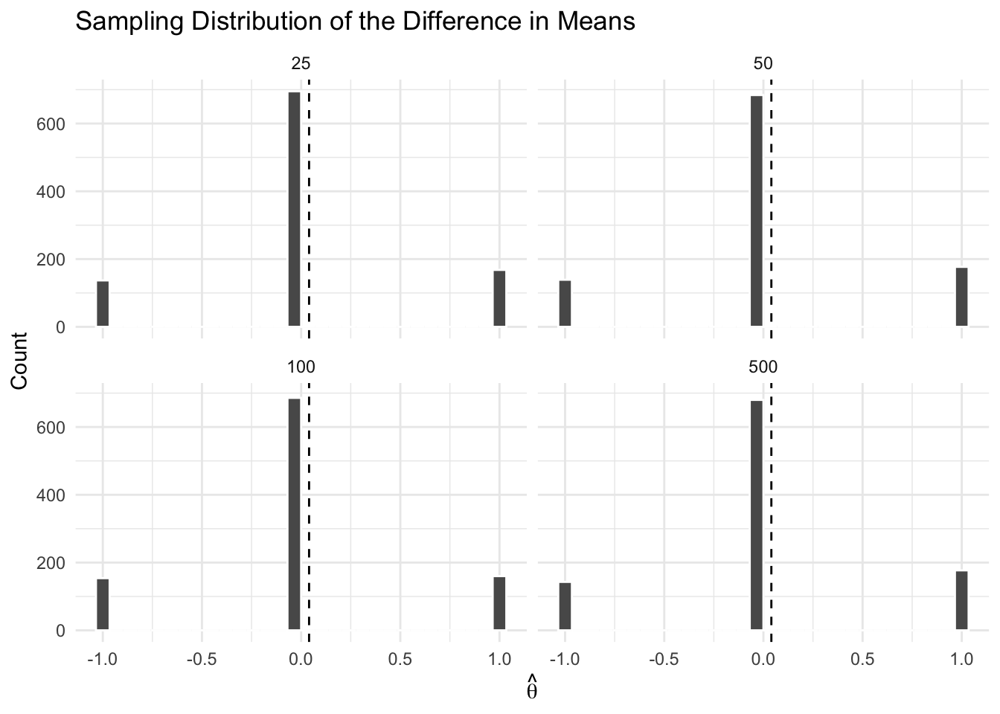

n_A <- 1000
n_B <- 1000
pi_A <- 0.22
pi_B <- 0.18
theta_true <- pi_A - pi_B
x_A <- rbinom(n_A, 1, pi_A)
x_B <- rbinom(n_B, 1, pi_B)
theta_hat <- mean(x_A) - mean(x_B)
theta_hat[1] 0.032Simulating Key Ideas from Classical Frequentist Statistics
Amelia Li
April 15, 2026
If you run a website, even a small wording change on a landing page can affect how many users sign up. Suppose my site includes a newsletter signup box, and I want to compare two possible calls to action. CTA A says, “Sign up for our newsletter here!”, while CTA B says, “Stay up to date by signing up!” These two messages are similar, but they may not perform the same way.
To learn which version works better, I can run an A/B test. In an A/B test, visitors are randomly assigned to one of two groups. One group sees CTA A and the other sees CTA B. I then compare the signup rates across the two groups. Because assignment is random, this gives me a clean way to estimate whether one CTA is more effective than the other.
Each visitor either signs up or does not sign up, so each outcome can be modeled as a Bernoulli random variable. Let \(\pi\) denote the probability of signup.
Since the CTA a visitor sees may affect that probability, I allow the Bernoulli parameter to differ across the two groups. Let \(\pi_A\) be the probability that a user signs up after seeing CTA A, and let \(\pi_B\) be the probability after seeing CTA B.
The parameter of interest is:
\[ \theta = \pi_A - \pi_B \] A natural estimator is:
\[ \hat\theta = \bar{X}_A - \bar{X}_B \]
Since the data are binary, this is simply the difference in observed signup rates.
In practice, we do not know the true values of \(\pi_A\) and \(\pi_B\). For this exercise, we set them manually to study how the estimator behaves.
Suppose: πA=0.22,πB=0.18,θ=0.04
The Law of Large Numbers tells us that sample averages converge to population averages as the sample size grows. This gives us confidence that \(\hat\theta\) will be close to \(\theta\) in large samples.

The estimate is noisy at first but stabilizes as sample size increases, approaching the true value.
To measure uncertainty, we use the bootstrap.
B <- 1000
boot_thetas <- replicate(B, {
mean(sample(x_A, replace = TRUE)) -
mean(sample(x_B, replace = TRUE))
})
boot_se <- sd(boot_thetas)
pihat_A <- mean(x_A)
pihat_B <- mean(x_B)
analytical_se <- sqrt(
pihat_A * (1 - pihat_A) / n_A +
pihat_B * (1 - pihat_B) / n_B
)
tibble(
bootstrap_se = boot_se,
analytical_se = analytical_se
)# A tibble: 1 × 2
bootstrap_se analytical_se
<dbl> <dbl>
1 0.0188 0.0182The two standard errors are very similar, indicating consistency between methods.
This gives a 95% confidence interval for \(\theta\).
The CLT states that the sampling distribution of \(\hat\theta\) becomes approximately Normal as sample size increases.

As sample size increases, the distribution becomes smoother and more bell-shaped.
We test:
\[ H_0: \theta = 0 \qquad H_1: \theta \neq 0 \]
# A tibble: 1 × 2
z_stat p_value
<dbl> <dbl>
1 1.76 0.0787A small p-value suggests evidence against the null hypothesis. In this simulated sample, the p-value is about 0.079, so I would not reject the null hypothesis at the 5% level. Although the estimated effect is positive, the evidence is not strong enough in this particular sample to rule out a zero difference.
We can rewrite the test as: Yi=β0+β1Di+εi
| term | estimate | std.error | statistic | p.value |
|---|---|---|---|---|
| (Intercept) | 0.194 | 0.0129 | 15.0660 | 0.000 |
| D | 0.032 | 0.0182 | 1.7572 | 0.079 |
The coefficient on \(D\) equals \(\hat\theta\).The regression estimate matches the difference in sample means, and the p-value is also very similar to the one from the two-sample z-test. This illustrates the equivalence between the two approaches.
Repeated testing inflates false positives.
[1] 0.1961The false positive rate exceeds 5%, showing that peeking leads to misleading conclusions.In the simulation, the false positive rate under repeated peeking is about 0.196, which is far above the nominal 0.05 level for a single test. This shows that repeatedly checking the data can dramatically inflate Type I error.
This simulation illustrates key ideas in frequentist statistics: consistency, uncertainty estimation, asymptotic normality, and hypothesis testing. It also highlights practical pitfalls like peeking, which can invalidate results if not handled properly.